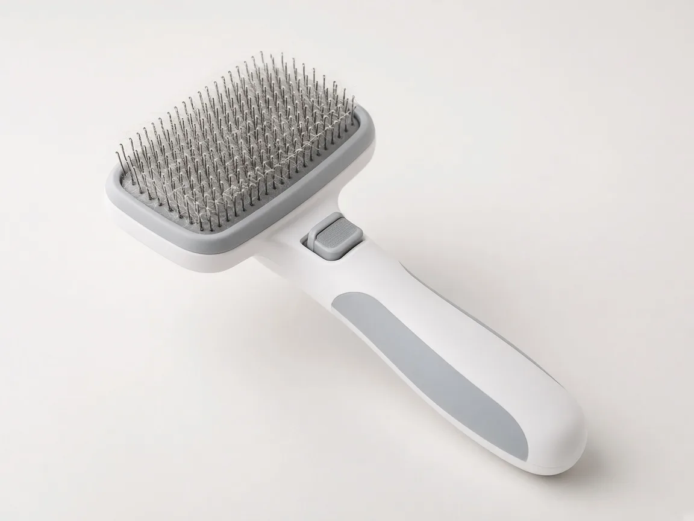
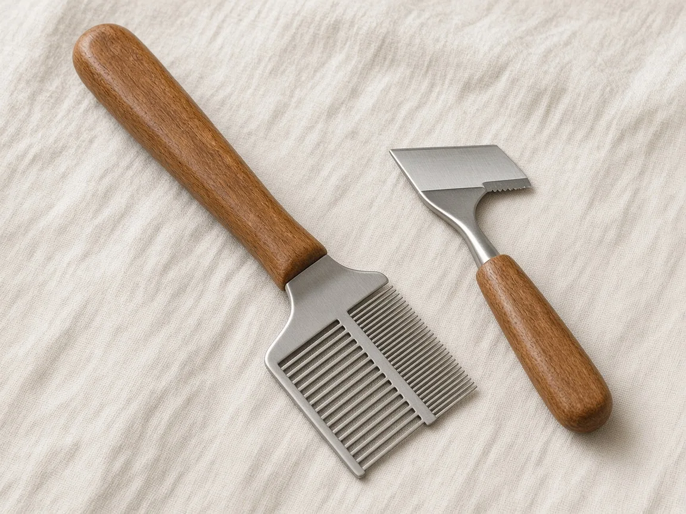

Brosse pour chat : laquelle choisir pour limiter les poils en appartement ?

Des poils sur le canapé, sur le plaid, sur ton pull noir et jusque dans les coins du parquet ? En appartement, un chat d’intérieur perd ses poils dans un espace réduit, et ça se voit vite. Un brossage régulier récupère une bonne partie du poil mort avant qu’il ne finisse sur tes meubles, et c’est souvent un moment de calme apprécié par le chat. Voici trois outils utiles et comment choisir le bon selon son pelage.
Comment choisir une brosse pour chat
- Le type de pelage : un chat à poils courts se contente souvent d’un gant ou d’une brosse douce, un chat à poils mi-longs ou longs a besoin d’une brosse à picots et d’un peigne pour les nœuds.
- Le nettoyage : une brosse autonettoyante, avec un bouton qui rétracte les picots, fait gagner beaucoup de temps et évite de retirer les poils à la main.
- La douceur : préfère des picots à bout arrondi ou protégé. Si ton chat se raidit ou s’en va, la brosse est peut-être trop agressive.
- La prise en main : un manche antidérapant et une tête pas trop large facilitent le passage sur le ventre, les pattes et derrière les oreilles.
1. La brosse autonettoyante à picots

La plus polyvalente au quotidien
Ses picots fins attrapent le sous-poil et le poil mort sur la plupart des pelages. Une fois le brossage terminé, tu appuies sur le bouton : les picots se rétractent et la touffe de poils se détache d’un coup, directement dans la poubelle. C’est l’outil le plus pratique si tu veux brosser ton chat quelques minutes plusieurs fois par semaine sans y passer du temps. Brosse dans le sens du poil, sans appuyer.
Voir sur Amazon – brosses autonettoyantes2. Le gant de toilettage en silicone

L’option douce pour les chats méfiants
Le gant transforme le brossage en caresse : beaucoup de chats qui fuient la brosse acceptent le gant sans difficulté. Les picots en silicone récupèrent le poil mort en surface, idéal pour un chat à poils courts ou pour habituer un chaton au toilettage. Il se rince à l’eau en quelques secondes. Il est moins efficace sur un sous-poil épais, où il complète la brosse plutôt qu’il ne la remplace.
Voir sur Amazon – gants de toilettage3. Le peigne et l’outil de démêlage

Pour les poils mi-longs, longs et les périodes de mue
Un peigne en inox à double denture repère et défait les petits nœuds derrière les oreilles, sous les pattes et sur le ventre, là où les poils longs s’emmêlent. L’outil de démêlage à lame courte retire une grande quantité de sous-poil pendant les mues de printemps et d’automne. Utilise-le avec légèreté et pas trop souvent : il est fait pour le sous-poil, pas pour être passé tous les jours. Si un nœud est trop serré, ne tire pas et ne coupe pas près de la peau.
Voir sur Amazon – peignes pour chatQuel outil pour quel chat ?
| Situation | Outil conseillé | Rythme indicatif |
|---|---|---|
| Chat à poils courts | Gant de toilettage ou brosse autonettoyante | 1 à 2 fois par semaine |
| Chat à poils mi-longs ou longs | Brosse autonettoyante + peigne | Plusieurs fois par semaine |
| Période de mue | Brosse autonettoyante, outil de démêlage avec modération | Plus souvent pendant quelques semaines |
| Chat qui n’aime pas être brossé | Gant de toilettage | Séances courtes, au calme |
Nos astuces pour un brossage sans stress
- Commence par des séances très courtes, une à deux minutes, quand ton chat est détendu, par exemple après le repas ou au réveil.
- Brosse d’abord les zones qu’il aime (dos, joues), puis les zones sensibles (ventre, pattes) seulement s’il reste calme.
- Termine par une récompense : une friandise ou une session de jeu avec un jouet interactif.
- Pour les poils déjà sur les meubles, un plaid lavable sur son endroit préféré et un aspirateur adapté aux poils d’animaux font une vraie différence.
- Si tu remarques des plaques sans poils, des rougeurs, des démangeaisons ou une perte de poils inhabituelle, demande conseil à ton vétérinaire : une brosse ne remplace pas un avis professionnel.
Quel budget prévoir ?
Un gant de toilettage ou un peigne se trouvent souvent pour quelques euros à une dizaine d’euros, une brosse autonettoyante un peu plus. Les prix changent souvent, vérifie-les sur la page du vendeur.
FAQ
À quelle fréquence brosser un chat d’appartement ?
Pour un chat à poils courts, une à deux fois par semaine suffit généralement. Un chat à poils mi-longs ou longs gagne à être brossé plusieurs fois par semaine, et plus souvent pendant les mues. Mieux vaut des séances courtes et régulières qu’une longue séance de temps en temps.
Mon chat refuse la brosse, que faire ?
Essaie le gant de toilettage, qui ressemble à une caresse. Propose-le quelques secondes, récompense, puis allonge peu à peu. Ne le retiens pas de force : un chat qui associe le brossage à une contrainte le refusera de plus en plus.
Faut-il brosser un chat à poils courts ?
Oui, même s’il fait sa toilette seul. Le brossage récupère le poil mort qui finirait sur tes meubles et te permet de vérifier l’état de son pelage et de sa peau. Un gant ou une brosse douce suffisent.
L’outil de démêlage peut-il s’utiliser tous les jours ?
Ce n’est pas conseillé. Il est conçu pour retirer le sous-poil en période de mue. Utilisé trop souvent ou en appuyant, il peut irriter la peau. Pour le quotidien, préfère la brosse autonettoyante ou le gant.
Une brosse suffit-elle à éviter les poils dans l’appartement ?
Elle limite nettement la quantité de poils, mais un chat en perd toujours un peu. Combine brossage régulier, plaid lavable sur ses endroits préférés et passage d’aspirateur. Pour son coin repos et le reste de son équipement, vois notre guide de l’équipement du chat en appartement.
Notre avis
Si tu ne prends qu’un seul outil, la brosse autonettoyante est la plus polyvalente. Le gant de toilettage est parfait pour un chat à poils courts ou un chat qui se méfie de la brosse. Le peigne et l’outil de démêlage deviennent utiles pour les poils mi-longs et longs et pendant les mues.
Audit gratuit : repère en 1 jour ce qui manque à ton chat d’appartement. Reçois le PDF par email.
Liens affiliés Amazon — nous pouvons toucher une commission sans surcoût pour vous.